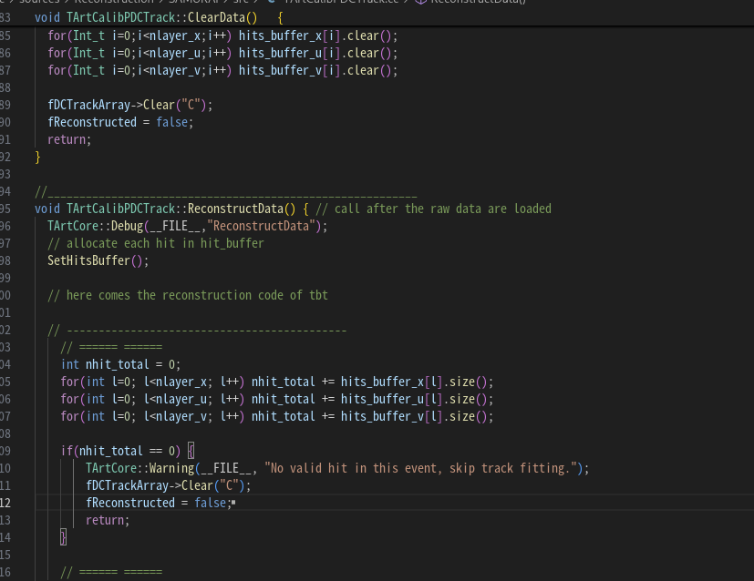

日志记录#
为什么要用日志#
传统的 std::cout 第一 I/O 会阻塞进程；第二难以调整输出级别。
本教程将解释为什么要抛弃 std::cout，并详细介绍 C++（spdlog, Quill）和 Python 标准库的现代日志解决方案。
1. 为什么要使用日志系统？#
在写简单的 "Hello World" 时，std::cout（C++）或 print（Python）很好用，但在复杂的物理分析框架中，它们有两大死穴：
1.1 I/O 阻塞（Performance Killer）#
- 同步写入：传统的
std::cout通常是同步的。当程序打印一行字时，CPU 必须等待该行被推送到终端或磁盘缓冲区。 - 锁竞争：在多线程环境下（例如使用 OpenMP 或 TBB），多个线程同时抢占
std::cout会导致严重的锁竞争，降低并行效率。
后果：在每秒处理数千个事例的循环中打印信息，可能会使程序速度降低一个数量级。
1.2 缺乏级别控制（Level Control）#
- 难以筛选：调试时需要详细信息，但正式运行时只想看错误。使用
cout时必须手动注释或写大量if (debug_mode) cout << ...。 - 难以定向：很难同时将错误信息输出到
error.log，而将普通信息只输出到控制台。
日志库的解决方案：
- 异步模式：主线程把消息放入内存队列（纳秒级），后台线程负责写磁盘，不阻塞计算。
- 分级过滤：通过设置 Log Level（TRACE、DEBUG、INFO、WARN、ERROR），在运行时决定输出，无需重新编译。
2. C++ 日志库推荐#
C++ 生态中目前最流行的两个高性能库是 spdlog 和 Quill。
2.1 spdlog（综合推荐）#
- 特点：速度快，API 类似 Python，支持 header-only（无需编译库），社区支持好。
安装示例：
# Ubuntu/Debian
sudo apt install libspdlog-dev
# 或者直接下载 include 文件夹放到你的项目中
# Header-only 模式需要在代码前加：
# #define SPDLOG_HEADER_ONLY
基础用法（C++）：
#include "spdlog/spdlog.h"
#include "spdlog/sinks/basic_file_sink.h" // 文件输出
#include "spdlog/sinks/stdout_color_sinks.h" // 彩色控制台输出
void test_spdlog() {
// 控制台日志（带颜色）
spdlog::info("Welcome to spdlog!");
spdlog::error("Some error message with arg: {}", 1); // 使用 {} 格式化
spdlog::warn("Easy padding in numbers like {:08d}", 12);
// 运行时修改级别
spdlog::set_level(spdlog::level::debug);
spdlog::debug("This message should be displayed..");
// 文件日志
auto file_logger = spdlog::basic_logger_mt("file_logger", "logs/analysis.log");
file_logger->info("Saving event data to disk...");
}
异步模式（物理分析推荐）：
#include "spdlog/async.h"
#include "spdlog/sinks/basic_file_sink.h"
void async_example() {
// 队列大小 8192，线程池大小 1
spdlog::init_thread_pool(8192, 1);
auto async_logger = spdlog::basic_logger_mt<spdlog::async_factory>("async_file_logger", "logs/async_log.txt");
for (int i = 0; i < 1000000; ++i) {
async_logger->info("Processing Event ID: {}", i);
}
}
2.2 Quill（极致低延迟）#
- 特点：适用于对延迟极度敏感的应用（如高频交易、DAQ 触发系统）。使用无锁环形缓冲区，延迟低至纳秒级。
- 注意：需要 C++17，并且需要编译库文件（不像 spdlog 那么容易 header-only 集成）。
基础用法（C++）：
#include "quill/Quill.h"
int main() {
// 启动后台线程
quill::start();
// 获取 Logger
quill::Logger* logger = quill::get_logger();
// 设置级别
logger->set_log_level(quill::LogLevel::Debug);
// 记录
LOG_INFO(logger, "Hello from {}", "Quill");
LOG_ERROR(logger, "Event processing failed! Error code: {}", 404);
// 主线程几乎不耗时，格式化工作在后台线程完成
}
特性对比表：
| 特性 | spdlog | Quill |
|---|---|---|
| 集成难度 | 低（Header-only） | 中（需链接库） |
| 延迟 | 很低（微秒级） | 极低（纳秒级） |
| 适用场景 | 离线分析、一般服务 | 在线 DAQ、实时系统 |
3. Python 日志库（logging）#
Python 标准库自带的 logging 模块功能强大，是所有 Python 框架的标准。
3.1 基础用法（快速开始）#
import logging
# 简单配置，直接输出到控制台
logging.basicConfig(
level=logging.INFO, # DEBUG < INFO < WARNING < ERROR < CRITICAL
format='%(asctime)s - %(name)s - %(levelname)s - %(message)s',
datefmt='%Y-%m-%d %H:%M:%S'
)
logging.debug("这是一条调试信息（不会显示，因为级别是 INFO）")
logging.info("开始处理 run_01.root")
logging.warning("探测器 A 电压不稳定")
logging.error("无法打开文件！")
3.2 进阶用法：同时输出到文件和屏幕#
在物理分析脚本中，通常希望屏幕只显示进度和错误，而详细调试信息保存到文件。
import logging
# 1. 创建 Logger
logger = logging.getLogger("MyAnalysis")
logger.setLevel(logging.DEBUG) # 总开关设为最低级别
# 2. 创建 Handler
# Handler A: 输出到文件（记录所有细节）
file_handler = logging.FileHandler("analysis_debug.log")
file_handler.setLevel(logging.DEBUG)
# Handler B: 输出到屏幕（只看重要信息）
console_handler = logging.StreamHandler()
console_handler.setLevel(logging.INFO)
# 3. 设置格式（Formatter）
formatter = logging.Formatter('%(asctime)s - %(levelname)s - %(message)s')
file_handler.setFormatter(formatter)
console_handler.setFormatter(formatter)
# 4. 将 Handler 添加到 Logger
logger.addHandler(file_handler)
logger.addHandler(console_handler)
# 测试
logger.debug("变量 x = 42, y = 100 (只会出现在文件中)")
logger.info("正在处理第 1000 个事例 (同时出现在屏幕和文件)")
logger.error("分割错误！(同时出现在屏幕和文件)")
附录：最佳实践建议#
- 不要在内层循环打 Log：即使是异步日志，在每秒执行几百万次的循环中频繁调用
logger->info也会拖慢 CPU。 - Bad:
for (event : events) { log.info("Processing {}", event.id); } - Good:
if (event.id % 1000 == 0) log.info("Processed {} events", event.id); - 使用条件编译（C++）：对于高开销的 TRACE 级别日志，可以用宏在 Release 模式下移除，做到零开销。
#define SPDLOG_ACTIVE_LEVEL SPDLOG_LEVEL_INFO
#include "spdlog/spdlog.h"
// SPDLOG_DEBUG 宏在编译时会被优化掉（如果活跃级别为 INFO）
SPDLOG_DEBUG("This code is removed in compilation if active level is INFO");
- 结构化日志（Structured Logging）：如果日志需要被脚本（如 Elasticsearch/Kibana）分析，尽量保持格式统一，或使用 JSON 格式的日志（spdlog 和 Python logging 都有 JSON 扩展）。
在项目里面使用日志#
“库负责埋点，调用方（App/Test）负责控制开关”，我们需要引入一个公共基础库 (Common/Utils) 来统一管理日志实例。
以下是基于你现有目录结构的日志系统实施方案。
- 架构调整：引入 libs/utils
首先，我们需要一个所有其他库 (datatypes, g4sim, reconstruction) 都能引用的基础库。建议在 libs/ 下创建一个 utils 目录。
libs/
├── utils/ <--- 新增：日志封装、字符串处理等通用工具
│ ├── include/
│ │ └── Logger.h
│ ├── src/
│ │ └── Logger.cpp
│ └── CMakeLists.txt
├── reconstruction/ <--- 引用 utils
...
- 实现日志封装 (libs/utils)
我们使用 spdlog，并通过一个单例或全局函数来控制配置。
libs/utils/include/Logger.h
#pragma once
#include "spdlog/spdlog.h"
#include "spdlog/fmt/ostr.h" // 支持自定义类型的输出
#include <memory>
#include <string>
namespace MyProject {
// 初始化日志系统
// level: "trace", "debug", "info", "warn", "error", "off"
// log_file: 如果为空，则不输出到文件
void InitLogger(const std::string& level = "info", const std::string& log_file = "");
// 获取核心 Logger 实例（可选，通常直接用 spdlog 宏即可）
std::shared_ptr<spdlog::logger> GetLogger();
}
// 定义一些快捷宏，方便以后如果换日志库可以统一修改
#define LOG_TRACE(...) spdlog::trace(__VA_ARGS__)
#define LOG_DEBUG(...) spdlog::debug(__VA_ARGS__)
#define LOG_INFO(...) spdlog::info(__VA_ARGS__)
#define LOG_WARN(...) spdlog::warn(__VA_ARGS__)
#define LOG_ERROR(...) spdlog::error(__VA_ARGS__)
libs/utils/src/Logger.cpp
#include "Logger.h"
#include "spdlog/sinks/stdout_color_sinks.h"
#include "spdlog/sinks/basic_file_sink.h"
#include <vector>
namespace MyProject {
void InitLogger(const std::string& level_str, const std::string& log_file) {
std::vector<spdlog::sink_ptr> sinks;
// 1. 控制台输出 (Console Sink)
auto console_sink = std::make_shared<spdlog::sinks::stdout_color_sink_mt>();
sinks.push_back(console_sink);
// 2. 文件输出 (File Sink) - 可选
if (!log_file.empty()) {
auto file_sink = std::make_shared<spdlog::sinks::basic_file_sink_mt>(log_file, true);
sinks.push_back(file_sink);
}
// 3. 创建组合 Logger
auto logger = std::make_shared<spdlog::logger>("multi_sink", begin(sinks), end(sinks));
// 设置默认 Logger，这样就可以直接用 spdlog::info 等 API 了
spdlog::set_default_logger(logger);
// 4. 设置级别
spdlog::level::level_enum level = spdlog::level::info;
if (level_str == "trace") level = spdlog::level::trace;
else if (level_str == "debug") level = spdlog::level::debug;
else if (level_str == "warn") level = spdlog::level::warn;
else if (level_str == "error") level = spdlog::level::err;
spdlog::set_level(level);
spdlog::set_pattern("[%Y-%m-%d %H:%M:%S.%e] [%^%l%$] %v"); // 格式：时间 [级别] 内容
}
}
- 在库中“埋点” (libs/reconstruction)
在你的算法库中，永远不要设置日志级别，只负责“汇报”。
libs/reconstruction/src/Clusterizer.cpp
#include "Logger.h" // 引用我们封装的头文件
#include "Clusterizer.h"
void Clusterizer::Run(const std::vector<Hit>& hits) {
// DEBUG: 只有在调试模式才会打印，生产模式下这是无操作（No-op），极快
LOG_DEBUG("Starting clustering on {} hits.", hits.size());
for (const auto& hit : hits) {
// TRACE: 极其详细的内部逻辑
LOG_TRACE("Processing hit at ({}, {}, {})", hit.x, hit.y, hit.z);
if (hit.energy < 0) {
// WARN: 数据异常，无论什么模式都应该打印
LOG_WARN("Found hit with negative energy: {}", hit.energy);
}
}
LOG_DEBUG("Clustering finished. Found {} clusters.", clusters_.size());
}
- 场景一：单元测试 (tests/) -> 开启上帝视角
在测试代码中，我们需要看到所有的细节来排查 Bug。
tests/unit/test_reco.cpp
#include "gtest/gtest.h"
#include "Logger.h"
#include "Clusterizer.h"
int main(int argc, char **argv) {
::testing::InitGoogleTest(&argc, argv);
// 【关键】在这里初始化日志，设置为 DEBUG 或 TRACE 级别
// 这样所有库里的 LOG_DEBUG 都会打印到屏幕上
MyProject::InitLogger("debug");
return RUN_ALL_TESTS();
}
TEST(RecoTest, SimpleCluster) {
LOG_INFO("Test started..."); // 这会显示
// ... 调用 Clusterizer
}
- 场景二：批量运行 (apps/run_reco) -> 只看结果和速度
在真正跑数据的 main.cpp 中，我们设置为 INFO 或 WARN，并手动添加进度条逻辑。
apps/run_reco/main.cpp
#include "Logger.h"
#include "Clusterizer.h"
#include <chrono> // 用于计时
int main(int argc, char* argv[]) {
// 1. 初始化：生产环境通常只看 INFO (进度) 和 WARN/ERROR
// 可以通过命令行参数解析 argv 来动态决定是否开启 debug
MyProject::InitLogger("info", "logs/reco_job_123.log");
LOG_INFO("Reconstruction job started.");
// 模拟 Event Loop
int total_events = 10000;
auto start_time = std::chrono::high_resolution_clock::now();
for (int i = 0; i < total_events; ++i) {
// ... 读取数据 ...
// ... 调用 reconstruction (内部的 LOG_DEBUG 此时会被自动静默) ...
// 2. 速度监控 (Progress Bar)
// 每 1000 个事例打印一次进度，这属于 INFO 级别
if (i % 1000 == 0 && i > 0) {
auto now = std::chrono::high_resolution_clock::now();
std::chrono::duration<double> elapsed = now - start_time;
double fps = i / elapsed.count();
LOG_INFO("Processed {}/{} events. Speed: {:.2f} Hz", i, total_events, fps);
}
}
LOG_INFO("Job finished successfully.");
return 0;
}
-
总结
这种设计完美满足了你的需求： -
库 (libs/reconstruction)：代码里写满了 LOG_DEBUG 和 LOG_TRACE，但不决定是否展示它们。
- 测试 (tests/)：在 main 中调用 InitLogger("debug")，激活库里所有的详细日志，方便找 Bug。
- 生产 (apps/)：在 main 中调用 InitLogger("info")。
- 库里的 LOG_DEBUG 全部静默（几乎零开销）。
- 库里的 LOG_WARN/ERROR 依然会打印（关键错误不漏）。
- main 里的 LOG_INFO 负责打印“处理速度”和“进度”。
CMake 注意事项
libs/utils/CMakeLists.txt
add_library(Utils src/Logger.cpp)
target_include_directories(Utils PUBLIC include)
target_link_libraries(Utils PUBLIC spdlog::spdlog) # 传递 spdlog 依赖
libs/reconstruction/CMakeLists.txt
add_library(Reconstruction src/Clusterizer.cpp)
target_link_libraries(Reconstruction PUBLIC Utils) # 只要链接 Utils 就能用日志
其他控制log的
| 场景 | 控制位置 | 方法 | 优点 |
|---|---|---|---|
| 生产环境/大规模计算 | CMake | 在构建时定义宏 SPDLOG_ACTIVE_LEVEL=2 |
速度最快，编译期彻底移除无用日志代码 |
| 日常开发/调试 | Main 参数 | 解析 argv 并传入日志级别 |
灵活，无需重编译 |
| ROOT 数据分析 | 宏文件 | 在交互脚本中调用 InitLogger("debug") |
交互式，所见即所得 |
| 集群/容器作业 | 环境变量 | 通过 std::getenv 读取配置 |
配置与代码分离，便于 DevOps 自动化 |
附录#

创建日期: 2025-11-18